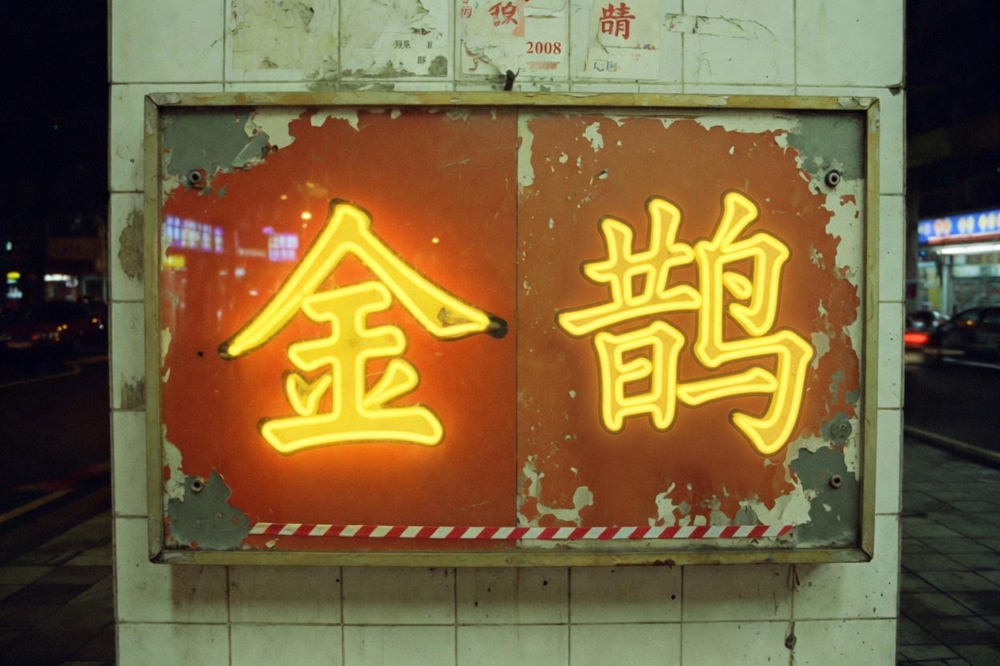

金鹊录像厅 梨河县金鹊镇金鹊西路18号 个体放映 每晚两场 周末加早场 电话已涂黑 本站由店内电脑生成

本厅开业于一九八七年，改过两次门头，没改过最后一排的木椅。木椅会响。响的时候不要回头。老板说那是椅子老了。老板后来不说话了。
网站还在收留言。留言栏在会员台后面，导航里看不见。你要找的第一个词在置顶公告里，帮助页还重复了一遍。一次只搜那一个词。
包厢预订从未开放。点它不会进入任何隐藏页。真入口不在灰色导航里。
金鹊镇没有院线。要看电影的人坐中巴去县城，回来时车上全是瓜子壳。本厅活下来，靠的不是片源，是有人愿意把夜场当成习惯。习惯比票房坚硬。坚硬的东西停更以后还会发光，像坏掉的灯箱。
公告栏的黄色标签是模板自带的。模板买来时叫「安心小站」。安心两个字后来被老板用油漆盖掉。盖掉的位置现在空着，空着也比写「暂停」诚实。暂停的栏目在导航最右侧那一格，点了不会开新页。
来过的人常把加映说成加班。加班还有工钱。加映只有座号。座号写在纸上，纸放进铁盒，铁盒不进排片表。排片表给人看。铁盒给灯看。